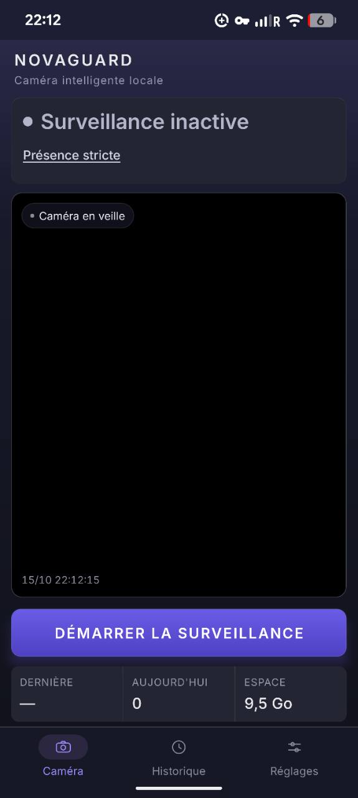
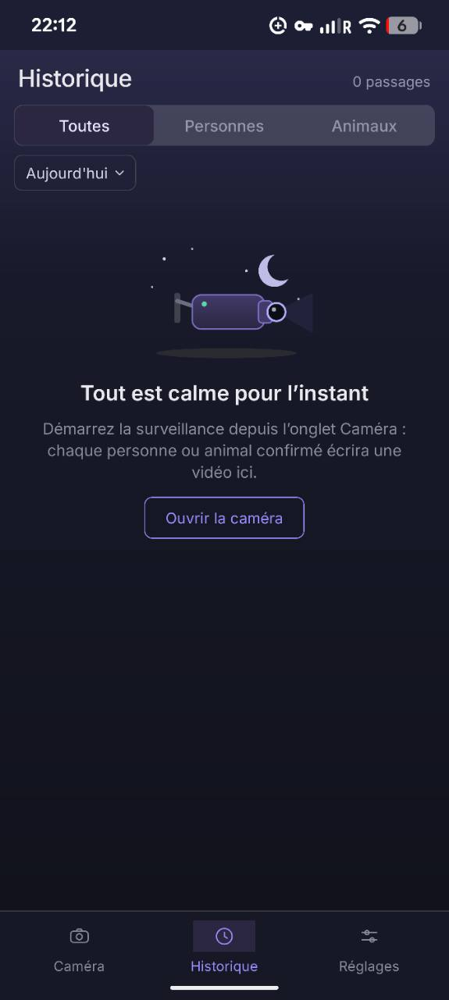
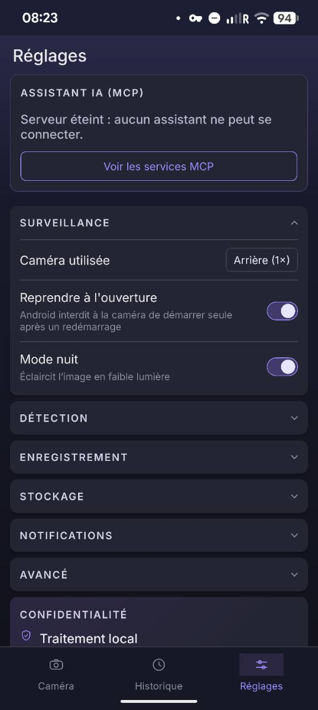

Des alertes
avec une image.
Le texte vous alerte, puis une image complète la même notification sans sonner à nouveau. Les retours rapprochés mettent à jour silencieusement le compteur de passages sur dix minutes.
Un téléphone, une nouvelle mission. Détectez les personnes et les animaux, enregistrez leurs passages et gardez vos vidéos chez vous.
Autonome au quotidien. Connecté à votre agent IA quand vous le décidez.
Nouveautés de la 1.1 Voir les écrans de l’application
NOVAGUARD 1.1.0
Des alertes plus utiles, des heures calmes et une scène mieux ciblée : découvrez les nouveautés de la version 1.1.
Préparation de la 1.1.0. Au 16 octobre 2026, la version est préparée dans la PR #113 ; aucun APK 1.1 n’est encore publié. Le numéro du fichier disponible est indiqué dans Installation.
Le texte vous alerte, puis une image complète la même notification sans sonner à nouveau. Les retours rapprochés mettent à jour silencieusement le compteur de passages sur dix minutes.
Programmez vos heures calmes, par exemple de 22 h à 7 h. Les alertes s’interrompent pendant cette plage ; la détection et l’enregistrement continuent sur le téléphone.
Délimitez une télévision, une fenêtre ou une partie de la scène à écarter. Le point bas du sujet, au niveau de ses pieds, détermine si une détection est dans une zone ignorée.
L’image reste masquée sur l’écran verrouillé et l’alerte n’est pas relayée à une montre. Lors des retours rapprochés, l’image conservée est celle du premier passage. Une notification déjà balayée ne réapparaît pas.
Consulter les réglages et les notes de la 1.1MOINS DE VIDÉO À PARCOURIR
NovaGuard rassemble la détection, les clips et l’historique dans votre téléphone. Vous retrouvez les moments qui méritent votre attention.
La détection embarquée distingue personnes et animaux sur le champ de la caméra. Sensibilité et seuils s’adaptent à votre scène.
Des clips MP4 déclenchés par les détections confirmées. Un historique filtrable pour relire, partager ou conserver ce qui compte.
Les vidéos restent dans le stockage privé de l’application. Choisissez la rétention, gérez l’espace et partagez un clip à votre initiative.
L’APPLICATION, TELLE QU’ELLE EST
Découvrez les captures Android fournies par le projet : surveillance inactive, historique avec un passage et réglages du serveur MCP. Ouvrez une image pour la voir en grand.
La caméra est en veille sur cette capture. Le bouton central lance la surveillance depuis l’application.

Un passage « Personne détectée » apparaît à 08:22, avec une vignette marquée 0:05. Le graphique situe ce passage dans la journée et les filtres permettent de retrouver les événements.

Le bloc « Assistant IA (MCP) » indique ici que le serveur est éteint. « Voir les services MCP » ouvre la liste des capacités ; les réglages de surveillance restent regroupés dessous.
Captures réelles, conservées sans retouche : l’historique montre un passage détecté, la surveillance est inactive sur sa capture et le serveur MCP est éteint dans les réglages.
AUTONOME PAR NATURE. OUVERTE PAR CHOIX.
Commencez simplement. Ajoutez un agent IA compatible MCP pour interroger votre historique, quand vous en avez besoin.
Placez votre Android face à l’espace à observer. NovaGuard analyse la scène en local et enregistre les détections confirmées.
Le serveur MCP intégré au téléphone donne à votre agent compatible accès aux événements, aux statistiques et aux images des passages.
Le modèle embarqué analyse les images et déclenche les clips localement, sans service de vision distant.
Le direct Wi-Fi et MCP sont optionnels. Si votre agent utilise une IA distante, les données et images qu’il consulte peuvent être transmises à son fournisseur.
NovaGuard est distribué sous licence GPL v3. Consultez l’implémentation, les évolutions et les limites documentées sur GitHub.
DONNEZ UNE NOUVELLE MISSION À VOTRE ANDROID
Android 16 (API 36) minimum pour la version actuelle du projet. Vérifiez la version de votre téléphone dans ses réglages.
DERNIÈRE VERSION STABLE PUBLIÉE
v0.9.5 ·
Télécharger l’APK106,3 Mo · APK Android
Notes de version et autres fichiersLa présentation inclut les nouveautés de la 1.1.0 en préparation. Vérifiez le numéro de l’APK ci-dessus : une version publiée plus ancienne peut ne pas inclure ces fonctions. Pour les essais, choisissez le build CI de la branche concernée.
Téléchargez l’APK avec le bouton ci-dessus. Ouvrez le fichier sur le téléphone et, si Android le demande, autorisez cette source d’installation. Désactivez cette autorisation après l’installation. Pour les ajouts récents de main, consultez les artefacts CI.
Ouvrir les builds CIInstallez l’APK sur un appareil compatible. Autorisez la caméra, choisissez vos réglages et lancez la surveillance depuis l’application.
Activez le serveur MCP dans les réglages, puis configurez votre client compatible sur un réseau local de confiance.
Suivre le guide MCP pas à pasPour les premiers essais : les APK du workflow CI utilisent la clé de debug du dépôt. La capture, l’orientation et le fonctionnement écran éteint restent à valider sur appareil réel. Testez votre installation avant de vous y fier.
AVANT DE COMMENCER
Le fonctionnement, les prérequis
et ce qui reste à vérifier.
La détection et l’enregistrement s’exécutent sur le téléphone. Aucun agent IA ni service de vision cloud n’est nécessaire à l’usage autonome. Les fonctions MCP et de direct Wi-Fi demandent une connexion réseau locale ; votre client IA peut avoir ses propres besoins d’accès à Internet.
Le projet exige actuellement Android 16 (API 36) au minimum. Vérifiez la version Android dans les réglages du téléphone. La caméra, l’encodage et les performances doivent être testés sur votre modèle ; la 4K dépend notamment de ses capacités.
Consulter les événements, les statistiques, des images de clips et les diagnostics. Avec votre autorisation distincte, il peut démarrer ou arrêter la surveillance, ajuster la sensibilité et les seuils, marquer un passage à conserver, annoter un événement et acquitter une alerte de déplacement. Le démarrage exige que l’application soit à l’écran. Les commandes sont journalisées ; aucune commande de suppression n’est exposée.
Les clips restent dans le stockage privé de l’application. Le partage d’un clip, le direct Wi-Fi et MCP ouvrent volontairement un accès aux données concernées. Si votre client MCP utilise un modèle distant, les images et métadonnées consultées peuvent sortir du téléphone et être traitées par son fournisseur.
Le direct Wi-Fi optionnel publie une image JPEG par seconde, avec un PIN de 12 chiffres généré sur l’appareil. Il utilise HTTP : les images et le PIN ne sont pas chiffrés pendant le transport. Réservez cet usage à un réseau local de confiance, sans exposition publique.
Non. Dans Réglages → Notifications, les heures calmes désactivent les alertes pendant la plage choisie. La détection et les vidéos continuent, et les passages restent dans l’historique. Les retours rapprochés ne rafraîchissent pas non plus l’alerte pendant cette plage.
Elles filtrent les détections d’après la position des pieds du sujet ; elles ne floutent ni ne masquent la vidéo. Vous pouvez définir jusqu’à trois rectangles dans Réglages → Détection. Vérifiez votre cadrage sur place pour conserver les passages qui vous intéressent.
La détection est une estimation : un passage non reconnu ne peut pas être récupéré. Le dépôt documente encore des validations sur matériel réel, notamment pour l’orientation, la continuité des clips et la capture écran éteint. Effectuez des essais dans vos conditions d’éclairage et vérifiez régulièrement le stockage et l’état de la caméra.